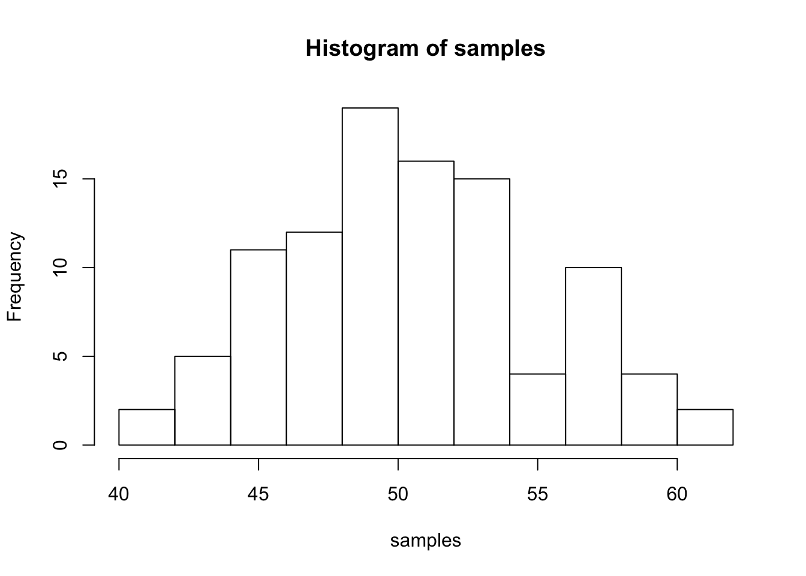
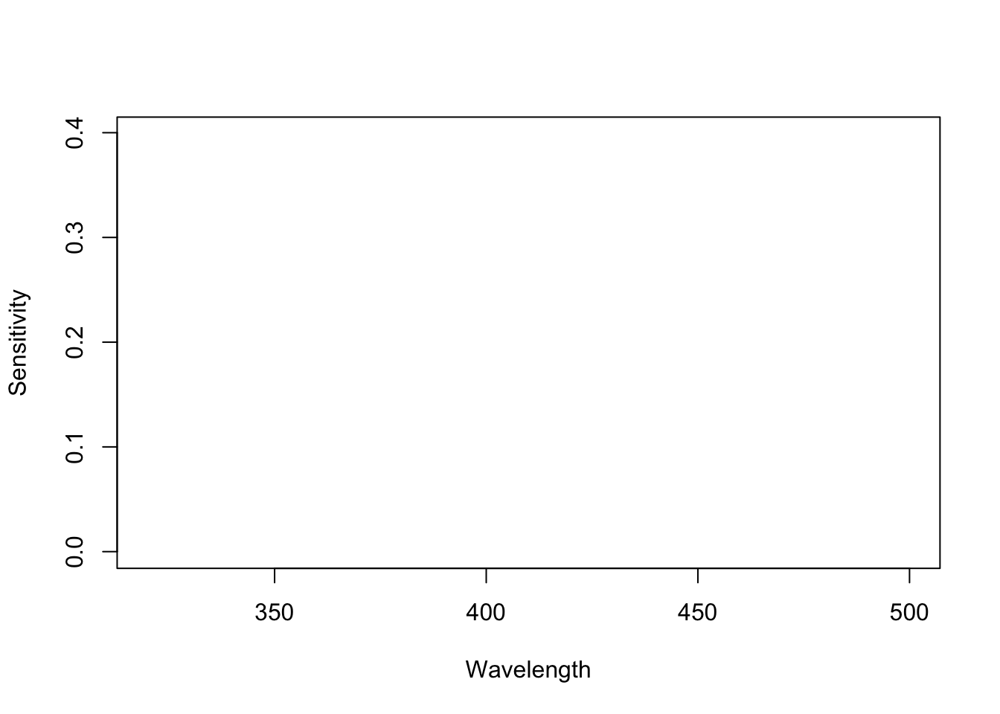
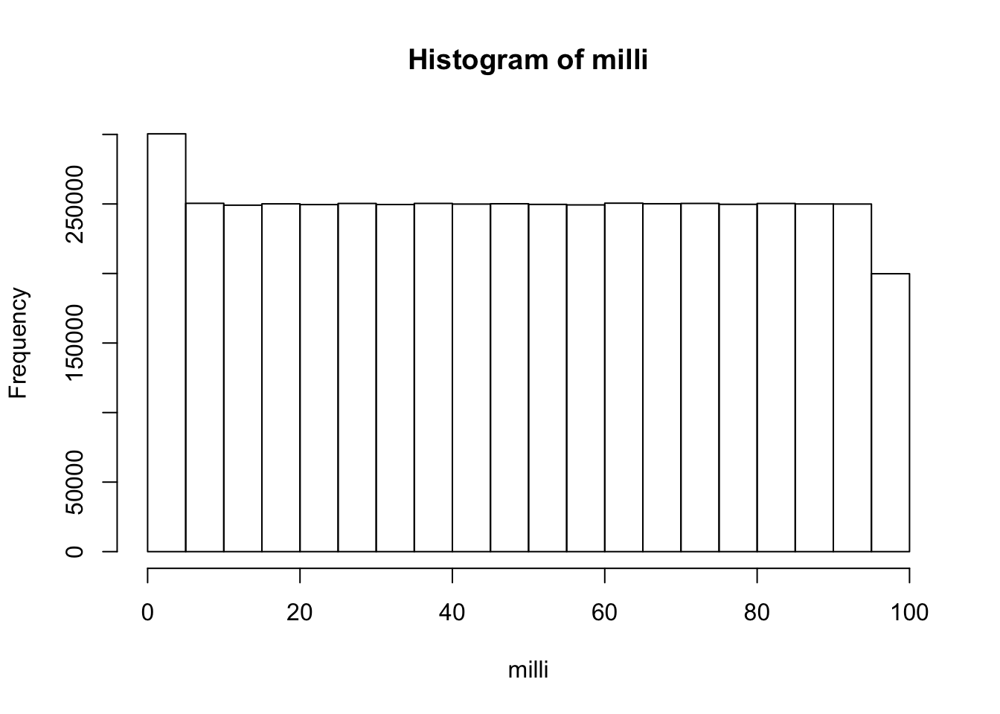

This is the heart of my online journal where i will be working through problems provided by the instructor as well as practicing code on my own.
first <- c("ja","we", "uj", "wx", "he")
last <- c("kjf", "sGsd", "asfhb", "jasd", "sdkjfg")
age <- c(34,645,23,85,1234)
sd<- list(First=first, Last=last, C=age)
names(sd)[3]<- "DOB"Find the longest word
x<- "a dog went for a walk to the circuis"
#first<- strsplit(x, split = " ")
#first[[1]][1]
longest<- function(x)
for (j in 1:length(x))
x<-unlist((strsplit(x, split = " ")))
x<-tail(sort(x))Histogram
samples<- rnorm(100, mean=50, sd=5)
hist(samples)
Rent of $750 for 12 months added using a loop
b<-length(12)
for(j in 1:12){
b[j]<-750
}
c<- sum(b)
print(c)## [1] 9000Plot sensitivity curves for S,M & L cones
Slen<- seq(320,500,10)
Mlen<- seq(440,650,10)
Llen<- seq(480,680,10)
Smean<- 420
Mmean<- 530
Lmean<- 560
Sx<-dnorm(Slen,Smean,1)
plot(Slen,Sx,type="n", xlab ="Wavelength", ylab = "Sensitivity", axes = TRUE)
2+3## [1] 512-7## [1] 55*3## [1] 1525/2.5## [1] 10x<- 22
y<- 4
z<- 6
x-y## [1] 18y*z## [1] 24a<- length(100)
for(i in 1:100){
a[i]<- i
}d<-seq(1,100,1)
print(d)## [1] 1 2 3 4 5 6 7 8 9 10 11 12 13 14 15 16 17
## [18] 18 19 20 21 22 23 24 25 26 27 28 29 30 31 32 33 34
## [35] 35 36 37 38 39 40 41 42 43 44 45 46 47 48 49 50 51
## [52] 52 53 54 55 56 57 58 59 60 61 62 63 64 65 66 67 68
## [69] 69 70 71 72 73 74 75 76 77 78 79 80 81 82 83 84 85
## [86] 86 87 88 89 90 91 92 93 94 95 96 97 98 99 100print(sum(d))## [1] 5050sum_of_integers<-function(e,f){
return (sum(seq(e,f,1)))
}
sum_of_integers(8,99)## [1] 4922odd<-seq(1,100,2)
print(odd)## [1] 1 3 5 7 9 11 13 15 17 19 21 23 25 27 29 31 33 35 37 39 41 43 45
## [24] 47 49 51 53 55 57 59 61 63 65 67 69 71 73 75 77 79 81 83 85 87 89 91
## [47] 93 95 97 99for (k in 2:1000) {
prime<- TRUE
for (x in 2:(k-1)){
if(k %% x==0){
prime<- FALSE
}
}
if(prime == TRUE){
print(k)
}
}## [1] 3
## [1] 5
## [1] 7
## [1] 11
## [1] 13
## [1] 17
## [1] 19
## [1] 23
## [1] 29
## [1] 31
## [1] 37
## [1] 41
## [1] 43
## [1] 47
## [1] 53
## [1] 59
## [1] 61
## [1] 67
## [1] 71
## [1] 73
## [1] 79
## [1] 83
## [1] 89
## [1] 97
## [1] 101
## [1] 103
## [1] 107
## [1] 109
## [1] 113
## [1] 127
## [1] 131
## [1] 137
## [1] 139
## [1] 149
## [1] 151
## [1] 157
## [1] 163
## [1] 167
## [1] 173
## [1] 179
## [1] 181
## [1] 191
## [1] 193
## [1] 197
## [1] 199
## [1] 211
## [1] 223
## [1] 227
## [1] 229
## [1] 233
## [1] 239
## [1] 241
## [1] 251
## [1] 257
## [1] 263
## [1] 269
## [1] 271
## [1] 277
## [1] 281
## [1] 283
## [1] 293
## [1] 307
## [1] 311
## [1] 313
## [1] 317
## [1] 331
## [1] 337
## [1] 347
## [1] 349
## [1] 353
## [1] 359
## [1] 367
## [1] 373
## [1] 379
## [1] 383
## [1] 389
## [1] 397
## [1] 401
## [1] 409
## [1] 419
## [1] 421
## [1] 431
## [1] 433
## [1] 439
## [1] 443
## [1] 449
## [1] 457
## [1] 461
## [1] 463
## [1] 467
## [1] 479
## [1] 487
## [1] 491
## [1] 499
## [1] 503
## [1] 509
## [1] 521
## [1] 523
## [1] 541
## [1] 547
## [1] 557
## [1] 563
## [1] 569
## [1] 571
## [1] 577
## [1] 587
## [1] 593
## [1] 599
## [1] 601
## [1] 607
## [1] 613
## [1] 617
## [1] 619
## [1] 631
## [1] 641
## [1] 643
## [1] 647
## [1] 653
## [1] 659
## [1] 661
## [1] 673
## [1] 677
## [1] 683
## [1] 691
## [1] 701
## [1] 709
## [1] 719
## [1] 727
## [1] 733
## [1] 739
## [1] 743
## [1] 751
## [1] 757
## [1] 761
## [1] 769
## [1] 773
## [1] 787
## [1] 797
## [1] 809
## [1] 811
## [1] 821
## [1] 823
## [1] 827
## [1] 829
## [1] 839
## [1] 853
## [1] 857
## [1] 859
## [1] 863
## [1] 877
## [1] 881
## [1] 883
## [1] 887
## [1] 907
## [1] 911
## [1] 919
## [1] 929
## [1] 937
## [1] 941
## [1] 947
## [1] 953
## [1] 967
## [1] 971
## [1] 977
## [1] 983
## [1] 991
## [1] 997pr<- data.frame(1:1000)
pr[pr!%% pr == 0]randnum<- sample(100)
randnum## [1] 23 99 33 49 13 66 81 90 18 70 96 1 83 9 17 54 11
## [18] 2 86 16 51 85 22 10 12 60 79 31 27 80 56 67 62 53
## [35] 52 73 3 39 37 40 43 42 14 91 34 58 35 69 77 47 57
## [52] 44 4 71 36 94 64 48 55 78 26 28 29 15 97 41 6 19
## [69] 89 46 100 59 98 93 45 63 87 30 74 72 20 5 95 32 65
## [86] 75 24 50 7 38 68 92 82 21 76 25 8 61 84 88randrange<- sample(1:25,100,replace=T)
randrange## [1] 7 13 21 20 8 4 9 5 13 19 9 11 15 11 13 8 21 9 1 19 19 19 18
## [24] 13 21 13 24 11 20 19 18 22 14 5 10 21 4 25 4 3 8 12 10 1 6 4
## [47] 3 8 9 7 7 8 18 19 5 14 9 6 15 4 2 10 12 13 16 21 3 25 8
## [70] 8 17 6 3 12 20 14 11 12 1 15 19 14 15 5 8 9 9 5 1 9 15 3
## [93] 12 2 7 11 16 22 6 5Average function
vector <- c(3,4,3,2,5,8,12)
aver<-function(avg_vec){
avg_vec<- (sum(vector))/length(vector)
return(avg_vec)
}
aver(vector)## [1] 5.285714Mode
mode<-function(mode_vec){
mode_vec<- sort(table(mode_vec))
return(which.max(mode_vec))
}
de <- c(4,4,5,7,2,2,1)
mode(de)## 2
## 4# ?Median
median<-function(w){
med<- sort(w) #maybe make it proportion?
n<- (length(med) +1 /2)
return(med[n])
}
med_vec <- c(3,9,4,2,6,8)
median(med_vec)## [1] 9Mean (take 2)
vector <- c(3,4,3,2,5,8,12)
mean<-function(x){
return((sum(x))/length(x))
}
mean(vector)## [1] 5.285714Range
range<-function(x){
sort(x)
return((max(x))-min(x))
}Standard Deviation
std<-function(x){
return(sqrt((sum((x-mean(x))^2))/length(x)))
}nchar("ejsbfn;sl")## [1] 9d<- "i was going to the bank when i saw a bird"
sapply(strsplit(d," "),length)## [1] 11e<- "sdsdf. gdg. ragrg. sgdthrtngf. gnfghnn"
#stuckabc <- "rgjbndvlnkvb"
table(abc)## abc
## rgjbndvlnkvb
## 1#not righth<-"bdaj jhsf dkjn fcjb fjkb"
h<-strsplit(h,split = " ")
h## [[1]]
## [1] "bdaj" "jhsf" "dkjn" "fcjb" "fjkb""dkjn" %in% h## [1] FALSE#not workingnow<- Sys.time()
print(as.numeric(now))## [1] 1556559371#??Sys.timeas.data.frame(read.table(flatfile_grades,header=TRUE,sep=","))Output the contents of a variable to a .txt file.
Create a variable that stores a 20x20 matrix of random numbers.
zyx <- matrix(0,nrow=20,ncol=20)num <- 1:100
for (fb in num) {
if((num[fb]%%3==0) && (num[fb]%%5==0)){
print("FizzBuzz")
next()
}
if (num[fb]%%3==0){
print("Fizz")
next()
}
# ifelse((num[fb]%%3==0) && (num[fb]%%5==0),1,0)
# print("FizzBuzz")
if (num[fb]%%5==0){
print("Buzz")
next()
}
else{
(print(num[fb]))
}
}## [1] 1
## [1] 2
## [1] "Fizz"
## [1] 4
## [1] "Buzz"
## [1] "Fizz"
## [1] 7
## [1] 8
## [1] "Fizz"
## [1] "Buzz"
## [1] 11
## [1] "Fizz"
## [1] 13
## [1] 14
## [1] "FizzBuzz"
## [1] 16
## [1] 17
## [1] "Fizz"
## [1] 19
## [1] "Buzz"
## [1] "Fizz"
## [1] 22
## [1] 23
## [1] "Fizz"
## [1] "Buzz"
## [1] 26
## [1] "Fizz"
## [1] 28
## [1] 29
## [1] "FizzBuzz"
## [1] 31
## [1] 32
## [1] "Fizz"
## [1] 34
## [1] "Buzz"
## [1] "Fizz"
## [1] 37
## [1] 38
## [1] "Fizz"
## [1] "Buzz"
## [1] 41
## [1] "Fizz"
## [1] 43
## [1] 44
## [1] "FizzBuzz"
## [1] 46
## [1] 47
## [1] "Fizz"
## [1] 49
## [1] "Buzz"
## [1] "Fizz"
## [1] 52
## [1] 53
## [1] "Fizz"
## [1] "Buzz"
## [1] 56
## [1] "Fizz"
## [1] 58
## [1] 59
## [1] "FizzBuzz"
## [1] 61
## [1] 62
## [1] "Fizz"
## [1] 64
## [1] "Buzz"
## [1] "Fizz"
## [1] 67
## [1] 68
## [1] "Fizz"
## [1] "Buzz"
## [1] 71
## [1] "Fizz"
## [1] 73
## [1] 74
## [1] "FizzBuzz"
## [1] 76
## [1] 77
## [1] "Fizz"
## [1] 79
## [1] "Buzz"
## [1] "Fizz"
## [1] 82
## [1] 83
## [1] "Fizz"
## [1] "Buzz"
## [1] 86
## [1] "Fizz"
## [1] 88
## [1] 89
## [1] "FizzBuzz"
## [1] 91
## [1] 92
## [1] "Fizz"
## [1] 94
## [1] "Buzz"
## [1] "Fizz"
## [1] 97
## [1] 98
## [1] "Fizz"
## [1] "Buzz"bah<-"hello and welcome to R"
b<-unique(unlist(strsplit(bah,split="")))
#bb<-data.frame(b,)
print(b)## [1] "h" "e" "l" "o" " " "a" "n" "d" "w" "c" "m" "t" "R"milli <-floor(runif(5000000, 0,100))
table(milli)## milli
## 0 1 2 3 4 5 6 7 8 9 10 11
## 50127 50077 50026 49843 50421 49948 50390 49889 50308 49900 49969 49740
## 12 13 14 15 16 17 18 19 20 21 22 23
## 49814 49866 49844 49857 50013 50207 50144 49976 49739 50101 50032 49875
## 24 25 26 27 28 29 30 31 32 33 34 35
## 50018 49526 50206 50253 50048 49972 49879 49959 49909 49944 49835 49949
## 36 37 38 39 40 41 42 43 44 45 46 47
## 50163 50271 49963 49962 50025 50339 50190 49807 49583 50002 50010 49877
## 48 49 50 51 52 53 54 55 56 57 58 59
## 50068 49978 50208 49602 50431 49902 50005 49742 50253 49933 49949 49768
## 60 61 62 63 64 65 66 67 68 69 70 71
## 49412 49971 50139 50060 50008 50386 50220 49985 50119 49695 50135 49954
## 72 73 74 75 76 77 78 79 80 81 82 83
## 50061 50220 49761 50381 49603 50376 49943 49767 50048 49860 50214 49975
## 84 85 86 87 88 89 90 91 92 93 94 95
## 50370 49931 50210 49790 50084 49961 49953 49636 50560 50204 49793 49753
## 96 97 98 99
## 49920 49873 50364 49670hist(milli)
r<-1:10
c<-1:10
matrix(r*c, nrow = 10, ncol = 10, byrow = TRUE )## [,1] [,2] [,3] [,4] [,5] [,6] [,7] [,8] [,9] [,10]
## [1,] 1 4 9 16 25 36 49 64 81 100
## [2,] 1 4 9 16 25 36 49 64 81 100
## [3,] 1 4 9 16 25 36 49 64 81 100
## [4,] 1 4 9 16 25 36 49 64 81 100
## [5,] 1 4 9 16 25 36 49 64 81 100
## [6,] 1 4 9 16 25 36 49 64 81 100
## [7,] 1 4 9 16 25 36 49 64 81 100
## [8,] 1 4 9 16 25 36 49 64 81 100
## [9,] 1 4 9 16 25 36 49 64 81 100
## [10,] 1 4 9 16 25 36 49 64 81 100Encrypt and Decrypt the Alphabet Turn any normal english text into an encrypted version of the text, and be able to turn any decrypted text back into normal english text. A simple encryption would be to scramble the alphabet such that each letter corresponds to a new randomly chosen (but unique) letter.
Snakes and Ladders. Your task here is to write an algorithm that can simulate playing the above depicted Snakes and Ladders board. You should assume that each roll of the dice produces a random number between 1 and 6. After you are able to simulate one played game, you will then write a loop to simulate 1000 games, and estimate the average number of dice rolls needed to successfully complete the game.
SnL<-function(){
m<-0
while(m<=25){
if(m == 3){
m<-11
}
if(m==6){
m<-17
}
if(m==9){
m<-18
}
if(m == 10){
m<- 12
}
if(m==14){
m<-4
}
if(m==19){
m<-8
}
if(m==22){
m<-20
}
if(m==24){
m<-16
}
#else(print(m))
print(m)
m<- m+ sample(1:6,1)
}
}Dice-rolling simulations. Assume that a pair of dice are rolled. Using monte carlo-simulation, compute the probabilities of rolling a 2, 3, 4, 5, 6, 7, 8, 9, 10, 11, and 12, respectively.
Monte Hall problem. The monte-hall problem is as follows. A contestant in a game show is presented with three closed doors. They are told that a prize is behind one door, and two goats are behind the other two doors. They are asked to choose which door contains the prize. After making their choice the game show host opens one of the remaining two doors (not chosen by the contestant), and reveals a goat. There are now two door remaining. The contestant is asked if they would like to switch their choice to the other door, or keep their initial choice. The correct answer is that the participant should switch their initial choice, and choose the other door. This will increase their odds of winning. Demonstrate by monte-carlo simulation that the odds of winning is higher if the participant switches than if the participants keeps their original choice.
100 doors problem. Problem: You have 100 doors in a row that are all initially closed. You make 100 passes by the doors. The first time through, you visit every door and toggle the door (if the door is closed, you open it; if it is open, you close it). The second time you only visit every 2nd door (door 2, 4, 6, etc.). The third time, every 3rd door (door 3, 6, 9, etc.), etc, until you only visit the 100th door.
Question: What state are the doors in after the last pass? Which are open, which are closed?
Where X and X-1 are replaced by numbers of course, from 99 all the way down to 0.
X<-99
#for(x in 1:99)
# print(X bottles of beer on the wall X bottles of beer Take one down, pass it around X-1 bottles of beer on the wall)